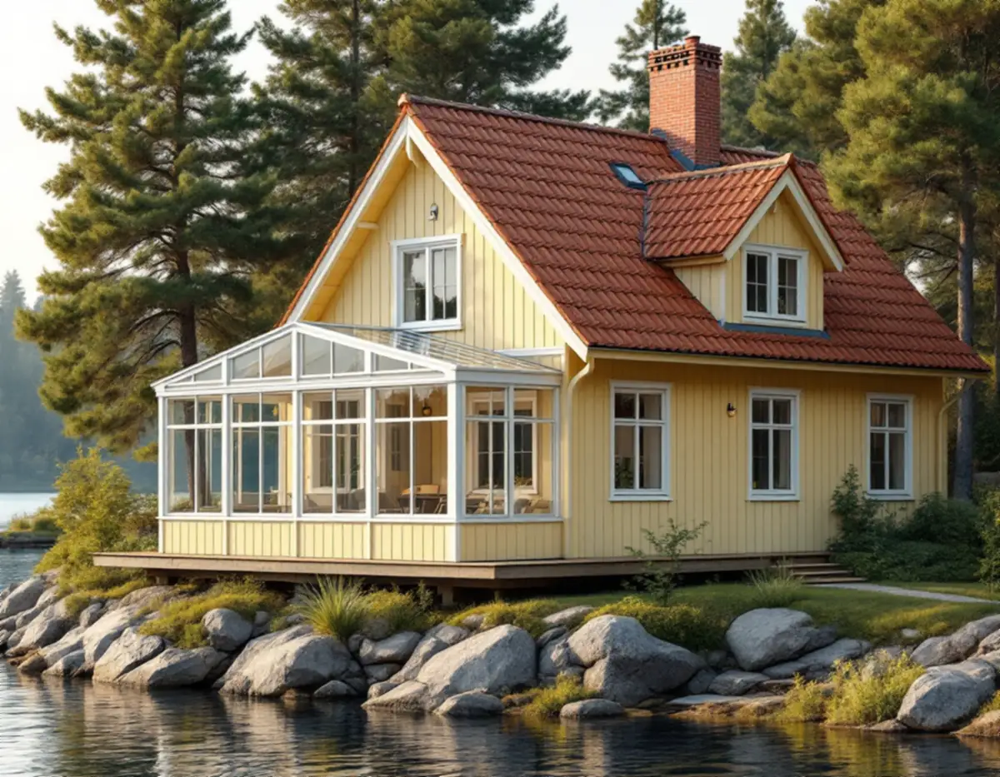
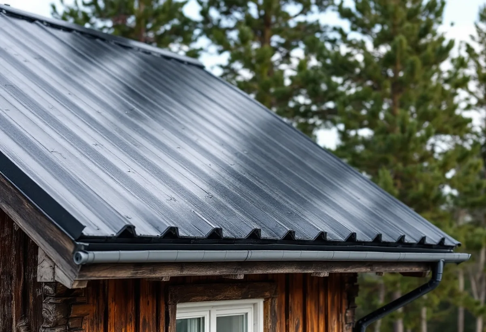
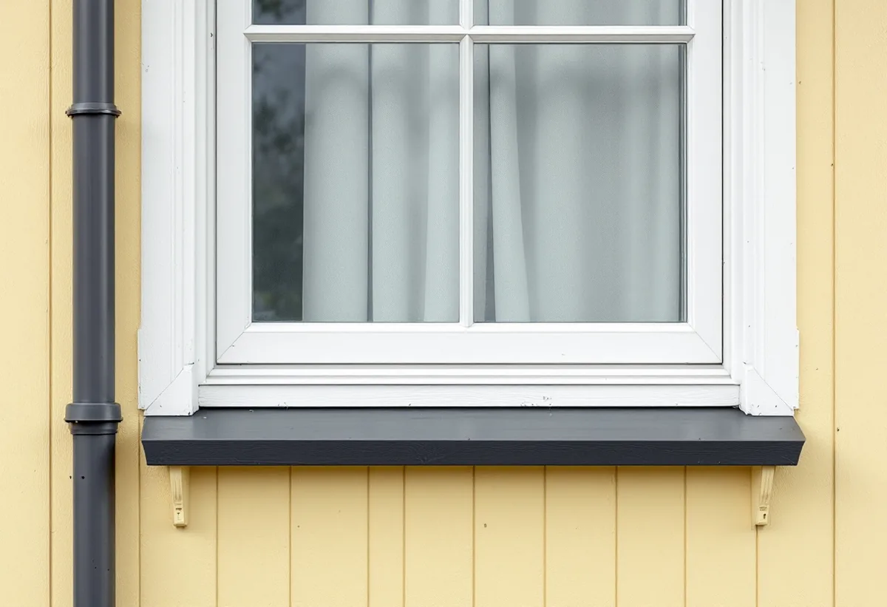

Platsbesök
Gratis genomgång av tak, bleck och stuprör.
På Svinningeudd och i Nantes finns Österåkers äldsta och bäst bevarade sommarhusbebyggelse, där plåt används till fönsterbleck och stuprör och ibland till hela taket. Geal Entreprenad AB utför plåtarbeten på villor och fritidshus i Österåker och utgår från kommunens råd när huset står i en värdefull miljö.

Österåkers kommuns skrift Råd och vägledning för byggande i Svinninge från 2008 beskriver det strandnära området Svinningeudd och Nantes som kommunens äldsta och bäst bevarade sommarhusbebyggelse och en stor tillgång för kommunen. Både sommargäster och åretruntboende är delaktiga i att förvalta miljön.
Skriften beskriver de äldre husen som enkla byggnadskroppar i ett eller två plan, där verandor och förstukvistar lagts till. Alla bostadshus har väl synliga sadeltak, ofta belagda med lertegel. Husens olika delar hålls ihop av enhetliga traditionella material: trä för fönster och fasad, tegel för skorstenen och plåt för fönsterbleck och stuprör. Fasaderna bör enligt riktlinjerna i huvudsak vara av trä, målat i ljusa kulörer med oljefärg eller Falu rödfärg.

Bland skriftens riktlinjer står att tak bör ha beläggning av rött lertegel eller ståndfalsad plåt, och att alternativa material prövas i bygglov. För nya byggnader rekommenderar skriften nytt lertegel, slätplåt eller papp. Skriften avråder från att ersätta lertegel med betongtakpannor, som är tjockare och tyngre och vars kulör bleks med åren.
Skriften kallar taket husets femte fasad, som spelar stor roll för hur bebyggelsen upplevs. Den skriver också att ett tegeltak som inte håller tätt oftast beror på att underlagspappen spruckit eller att läkten är gammal och skadad, och att det inte finns någon anledning att byta allt tegel för att några delar är skadade. Ett plåttak med stående falsar passar alltså in i Svinninge. Vid ett byte från tegel till plåt eller tvärtom tar vi med kommunens riktlinjer i förslaget och kontrollerar om bygglov krävs. Mer om takbyten finns under takbyte i Österåker.
Österåkers kommun skriver att du behöver söka bygglov om fastigheten ligger inom ett kulturhistoriskt särskilt värdefullt område eller om byggnaden är särskilt värdefull. Det gäller enligt kommunen till exempel om du vill ändra fasaden, bygga till, riva, underhålla eller sätta upp solpaneler. Kommunen påpekar att även små ändringar kan påverka en känslig byggnad.
Österåkerskartan visar områden med kulturhistoriska värden, och kommunen ber dig kontakta bygglovenheten innan arbetet börjar. Vi tittar i kartan tillsammans med dig och tar fram ritningar och beskrivning om lov behövs för att byta plåt på taket eller ändra bleck och stuprör.
Kommunens sida räknar bevarade byggnadsdetaljer som fönster och fasadmaterial till det som kan göra ett hus värdefullt. Ett fönsterbleck eller ett stuprör är en liten del av fasaden, men på ett hus där allt annat är ursprungligt syns ett avvikande beslag. Vi bockar bleck efter de gamla och väljer stuprör med samma dimension och kulör.
Kring skorstenen och vid takfoten är plåten utsatt för väder. Vi lagar eller byter beslag där vatten tränger in och kontrollerar att rännorna har rätt fall. Mer om tjänsten finns under plåtslagare.

Gratis genomgång av tak, bleck och stuprör.
Vi ser om huset ligger i en värdefull miljö.
Material och kulör enligt kommunens råd.
Ritningar och beskrivning när lov krävs.
Bleck, rännor, stuprör och takplåt.
Avrinning och anslutningar provas.
Skatteverket ger rotavdrag för att reparera, rengöra eller byta ut plåttak, hängrännor och stuprör på ett småhus du äger, och avdraget gäller även ett fritidshus du kan använda. Arbete med ställning i samband med arbetet ingår.
Avdraget är högst 30 procent av arbetskostnaden och högst 50 000 kronor per person och år. Plåt och annat material ger inget avdrag, och Geal drar avdraget direkt på fakturan.
Takets storlek och lutning, om hela taket eller bara detaljer ska bytas, bockade bleck efter gamla förlagor, bygglovsritningar, ställning, hur lätt det är att komma fram till huset och resväg ut på öar. Efter ett gratis platsbesök får du ett skriftligt kostnadsförslag.
Plåttak, hängrännor och beslag.
Plåtslagare i Stockholm →Takbyte, takbesiktning och plåtarbeten.
Takläggare i Österåker →Svinninge, sommarvillor och sportstugor.
Takrenovering i Österåker →Uthyrning, kulturmiljö och fornlämningar.
Attefallshus i Österåker →VA-utbyggnad, öar och vattensmarta val.
Badrumsrenovering i Österåker →Rivning, markarbete och gatukostnader.
Byggföretag i Österåker →Sommarvillornas fasadkulörer.
Fasadmålning i Österåker →Skärgårdshus, fritidshus och villor i Österåker.
Fasadrenovering i Österåker →Varsamhet, kulturvärden och kustlägen i Österåker.
Fönsterbyte i Österåker →Sommarvillorna i Svinninge.
Fönsterrenovering i Österåker →Jämna golv och färre trösklar.
Golvläggare i Österåker →Golv i sommarhus som blivit bostad.
Golvslipning i Österåker →Helårshus, brunn och avlopp.
Köksrenovering i Österåker →Sommarvillor, röda stugor och efterkrigsvillor.
Målare i Österåker →Bryggor, altaner och äldre snickerier.
Snickare i Österåker →Lertegel, lovfrågan och återbruk av pannor.
Takbyte i Österåker →Sommarvillan blir åretruntbostad.
Tapetsering i Österåker →Grannmedgivande, strandskydd och utstakning.
Tillbyggnad i Österåker →Fritidshuset, värmen och anmälan.
Totalrenovering i Österåker →